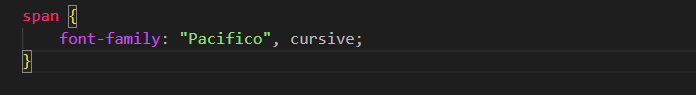
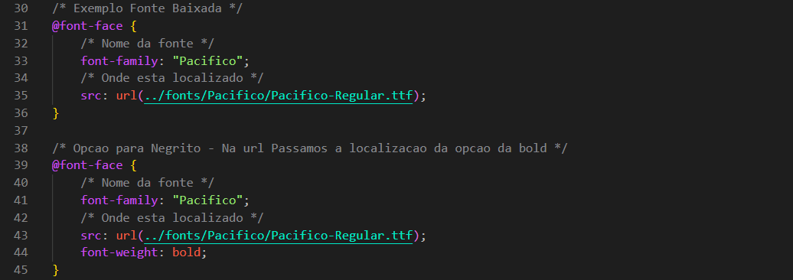

@font-face
Intro
Aqui iremos ver tanto @font face quando opcao de baixar fonte.
Aqui iremos ver tanto @font face quando opcao de baixar fonte.
Apos escolhermos um site que tenha a fonte desejada como o Google Fonts que tambem tem opcao de download. Se baseando nesse site podemos ir na opcao novamente de Get Font e agora podemos ir na opcao de download.
Apos baixarmos o arquivo das fontes. Podemos passar esses arquivos para nosso arquivo assents/fonts e estar usando ela, para usa-la tambem podemos conferir seu nome ao baixar para podermos utilizar em nosso font-family. Com isso agora podemos usa-la.
Ficando da seguinte forma em nosso CSS:

O @font-face é usado para importar fontes personalizadas para o projeto. Com ele, podemos definir um nome para a fonte e depois utilizá-la de forma simples no CSS através da propriedade font-family.
Ficando da seguinte forma em nosso CSS:
